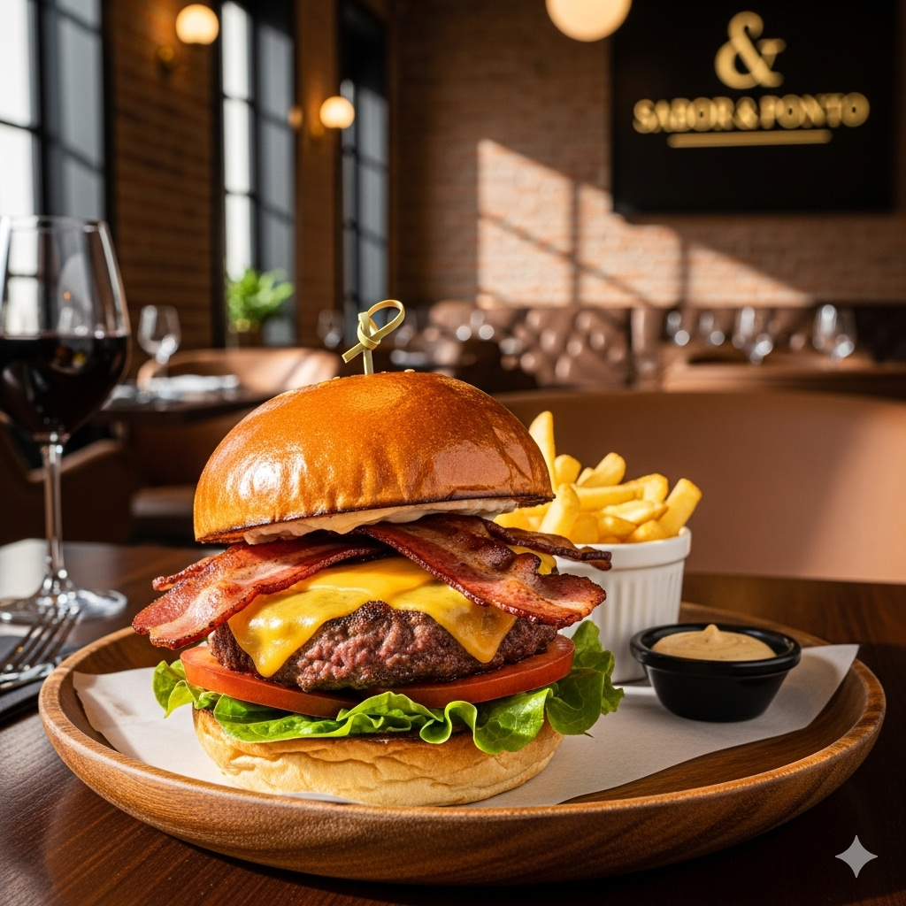
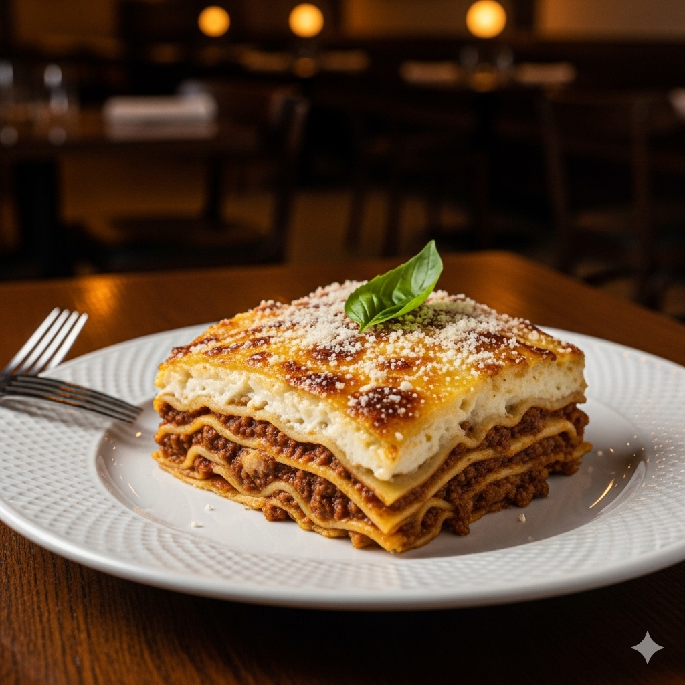
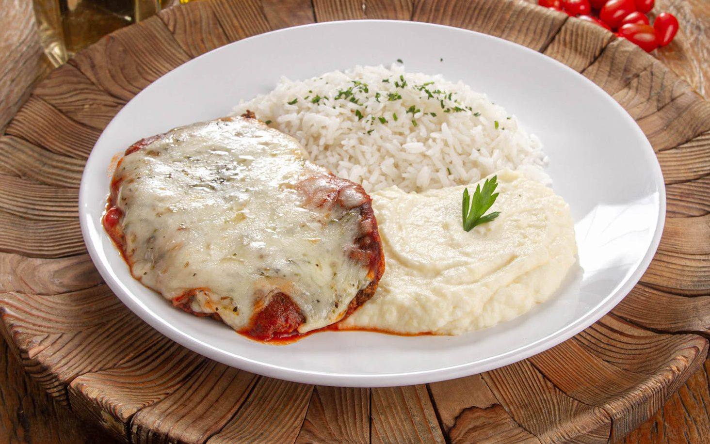
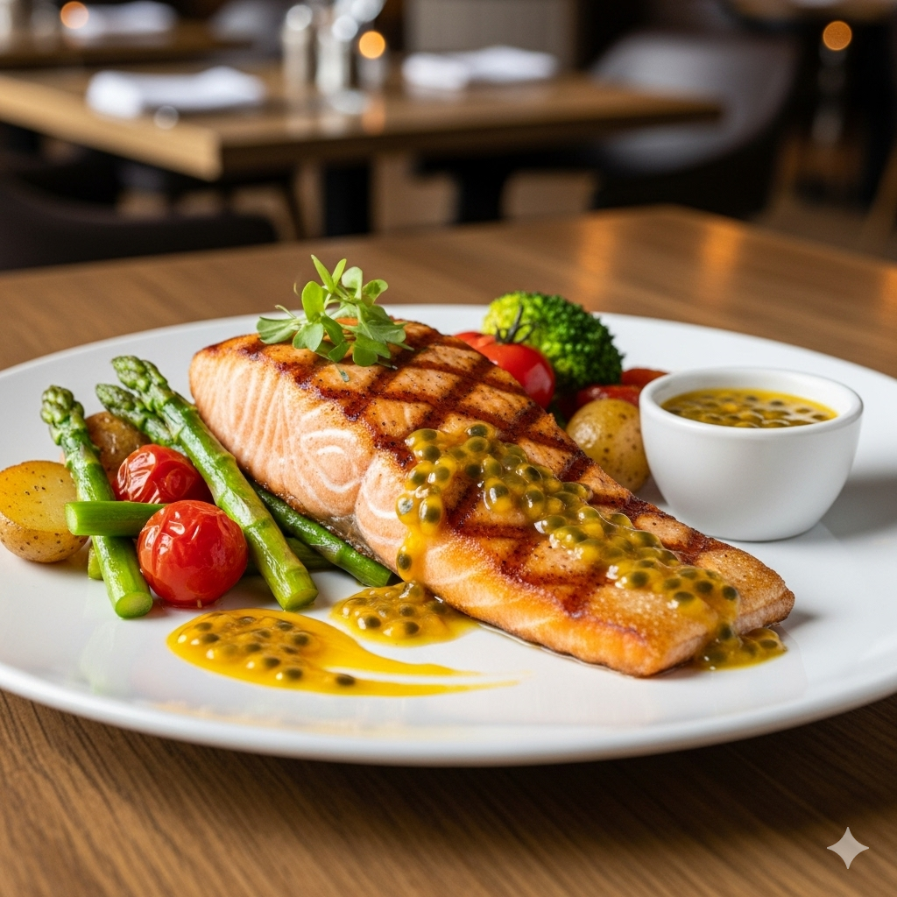
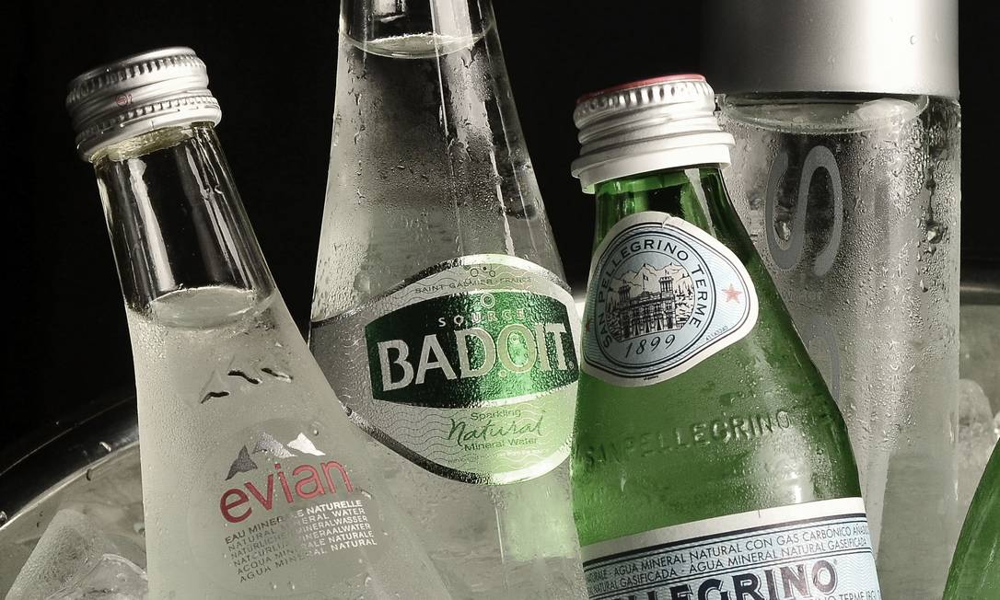
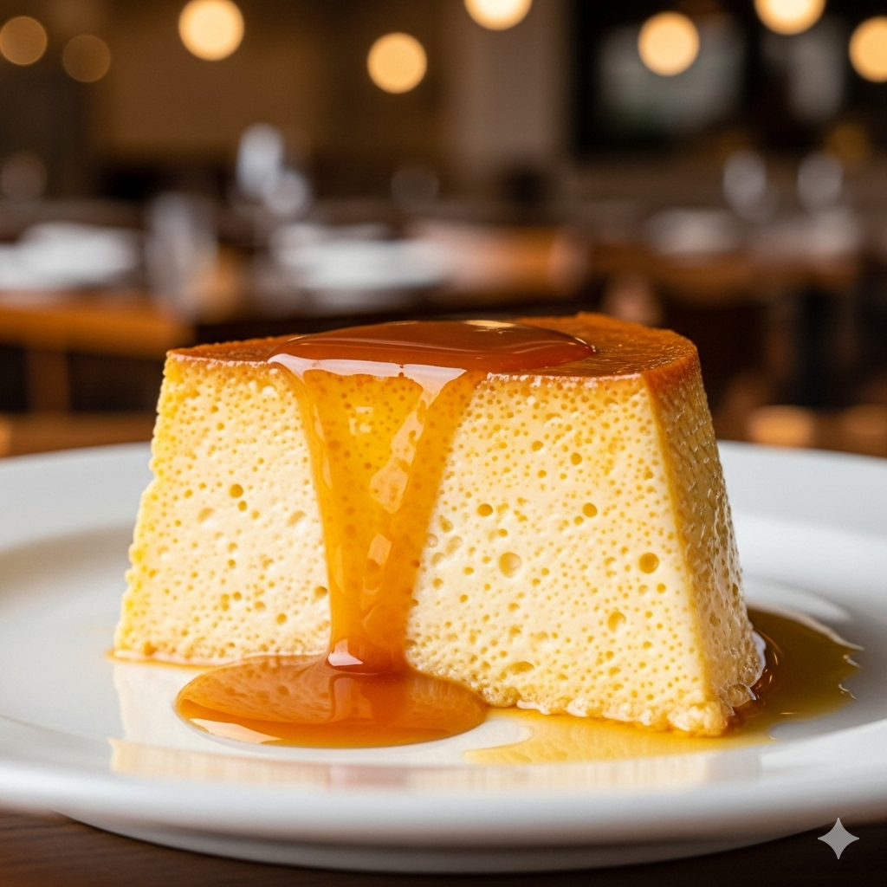

Cardápio
| Prato | Descrição | Preço |
|---|---|---|
| Hambúrguer Gourmet | Pão de brioche, blend de carne, queijo , bacon crocante, maionese da casa e salada fresca. | R$ 38,00 |
| Lasanha à Bolonhesa | Massa fresca com camadas de carne moída e molho branco, gratinada com queijo parmesão. | R$ 45,00 |
| Frango à Parmegiana | Filé de frango empanado, coberto com molho de tomate caseiro e queijo derretido, acompanhado de arroz e purê. | R$ 35,00 |
| Salmão Grelhado | Salmão grelhado na manteiga com ervas, servido com legumes assados e um molho leve de maracujá. | R$ 55,00 |
| Strogonoff de Frango | Cubos de frango salteados com molho cremoso de cogumelos frescos, servido com arroz branco e batata palha. | R$ 37,00 |
-

Hambúrguer Gourmet
-

Lasanha à Bolonhesa
-

Frango à Parmegiana
-

Salmão Grelhado
-

Strogonoff de Frango
Bebidas
| Prato | Descrição | Preço |
|---|---|---|
| Sucos Naturais | Feitos na hora com frutas da estação (laranja, abacaxi com hortelã, maracujá). | R$ 12,00 |
| Refrigerantes | Coca-Cola, Guaraná Antártica, Soda Limonada. | R$ 8,00 |
| Água Mineral | Com ou sem gás. | R$ 6,00 |
-

Sucos
-
Refrigerantes
-

Água Mineral
Sobremesas
| Prato | Descrição | Preço |
|---|---|---|
| Pudim de Leite Condensado | O clássico Pudim, liso e cremoso, com uma generosa calda de caramelo dourada. O sabor de casa feito com perfeição. | R$ 18,00 |
| Mousse de Maracujá | Um mousse leve, aerada e com sabor intenso de maracujá, coberta com uma calda caseira. O equilíbrio perfeito entre o cítrico e o doce. | R$ 22,00 |
| Bolo de Cenoura com Brigadeiro | Uma fatia de bolo de cenoura macio e úmido, coberta com uma camada generosa de brigadeiro cremoso que escorre pelas laterais. | R$ 20,00 |
-

Pudim
-

Mousse de Maracujá
-

Bolo de Cenoura com Brigadeiro
Sugestões do Chef
- Hambúrguer Gourmet: A prova de que a comida clássica pode ser extraordinária. Nosso chef eleva o hambúrguer a outro patamar com um pão de brioche fresco, um blend de carne suculento e queijo artesanal, tudo preparado no ponto.
- Salmão Grelhado: Uma opção leve e refinada, perfeita para quem busca um sabor marcante. O salmão, grelhado na manteiga com ervas, é finalizado com o nosso molho leve de maracujá, que adiciona um toque agridoce e sofisticado ao prato.
- Lasanha à Bolonhesa: Um clássico da comida que conforta a alma, preparado com um cuidado especial. A massa fresca com camadas de ragu de carne moída e o molho branco cremoso, gratinada com queijo parmesão, é a escolha certa para quem quer se sentir em casa.